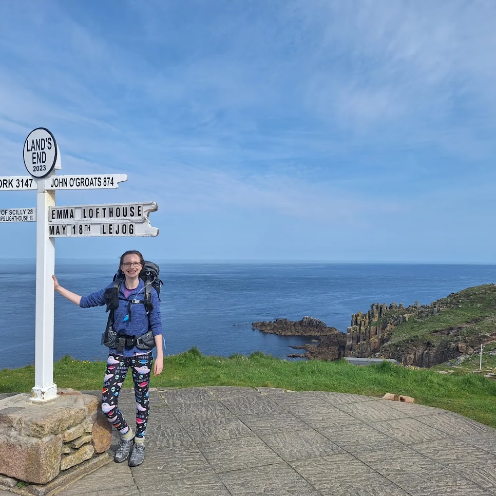

Land's End to John O'Groats
In 2023, I undertook a personal challenge to walk the length of the UK. Starting at Land's End in Cornwall, the most south-westerly point and going all the way up to John O'Groats at the far north-east of Scotland. Of course, stopping at The Lizard (southern most point) and Dunnet Head (northern most point) on the way. An amazing experience that I will happy talk about for hours!
Start: Land's End
Finish: Dunnet Head
(Scotland)
Stats
Distance Walked: 2195km (1364 miles)
Total Number of Steps: 3.2 million
Time taken: 112 days
Longest Day: 37km
Shortest Day: 8km